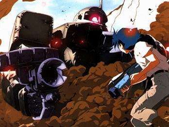

| Guerillas |
|
|  | |
General and Technical Data |
|
|
Unit type: all purpose infantry Unit size: 12 men Armament: Colt 1911, Pipe Bombs, AK47, RPG-2 |
|
| Technical and Historical Notes | |
| As the war has progressed, many civilian elements have taken to procuring armaments to protect themselves. Some mercenaries take the fight to the enemy, known for their unorthodox methods of taking down mobile suits and tanks with inferior equipment. |
 RPG quick stats sheet
RPG quick stats sheet